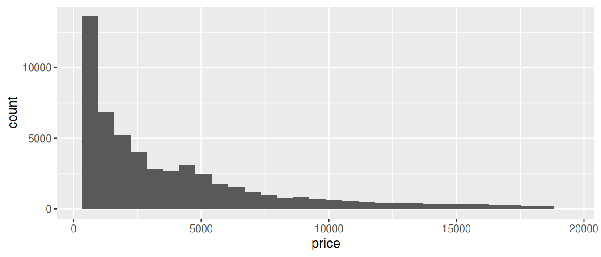
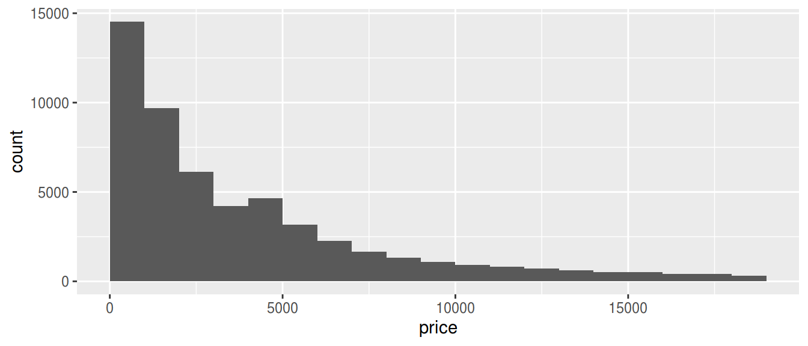
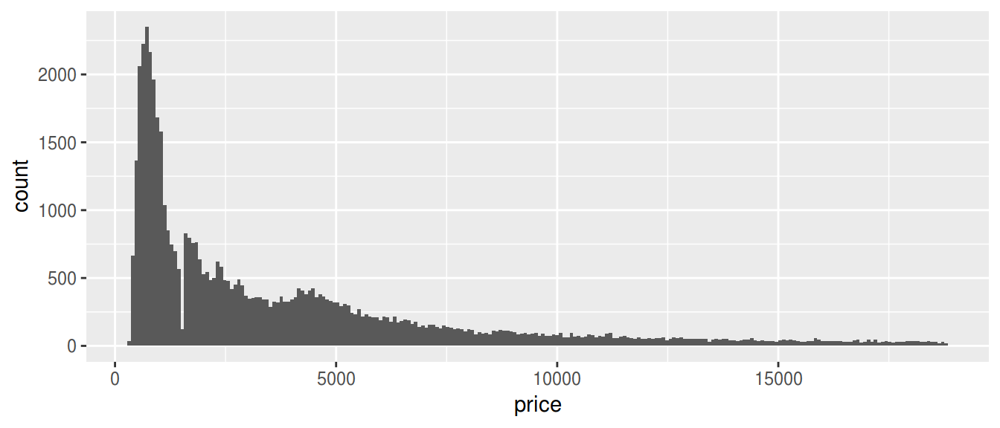
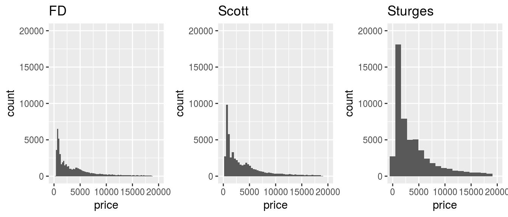

TL; DR
geom_histogram(binwidth = ) はデータを受け取ってビン幅を返す関数を受け付けるよ。
ggplot2のヒストグラムはビン数30が既定
なぜ……。
調整するには bins でビン数を変えるか、 binwidth でビン幅を変える。
両方指定すると binwidth が優先される。
library(ggplot2)
ggplot(diamonds, aes(price)) + geom_histogram()## `stat_bin()` using `bins = 30`. Pick better value with `binwidth`.
参考: https://stats.biopapyrus.jp/r/ggplot/geom_histogram.html
ビン幅を動的に決めたい
という話は随分前にQiitaでもした。
事前に頻度分布を集計した結果をデータフレームとして ggplot() に与えるというもの。
https://qiita.com/Atsushi776/items/f71a6f011118031f6e0a
facet した変数ごとにbin幅を変える方法の決定版は今でもこれだと思う。
facet した変数ごとにbin幅を変える必要がなければ、@hoxo_m氏から頂いたコメントも有用。
こちらでは、stat_bin(breaks = ) を利用する。
ただし、同じデータに二度参照せねばならず、もう一歩といった感がある。
ggplot(diamonds, aes(x = price)) +
stat_bin(breaks = hist(diamonds$price, plot = FALSE)$breaks)
geom_histogram(binwidth = ) に関数を指定
じゃあどうするのという話なのだが、geom_histogram(binwidth = ) は関数を受け付けることを利用するといい。
x軸に指定した値を元にビン幅を返す関数を好きに定義しよう。
以下は平方根選択した例。
library(ggplot2)
ggplot(diamonds, aes(price)) +
geom_histogram(binwidth = function(x) ceiling((max(x) - min(x)) / sqrt(length(x))))
ビン幅を決める関数を定義
世の中には平方根選択以外にも色々なビン幅の決め方があります。 個人的な推しはScottの選択ですね。
実装にはWikipediaの ヒストグラム#ビンの個数と幅 あたりを参考にしてもいいですが、 Scottの選択などによるビン数を求める関数であれば、 grDevicesパッケージに定義されています。
hist() のビン数も、grDevicesパッケージを利用して決めているので、
geom_histogram() でも利用しない手はないでしょう。
- Sturgesの選択:
nclass.Sturges() - Scottの選択:
nclass.scott() - Freedman-Diaconisの選択:
nclass.FD()
以下のように、ビン数をビン幅に直す関数を定義しておきます。
library(grDevices)
bw = function(x, f) ceiling((max(x) - min(x)) / f(x))
FD = function(x) bw(x, nclass.FD)
scott = function(x) bw(x, nclass.scott)
sturges = function(x) bw(x, nclass.Sturges)テスト
library(ggplot2)
g <- ggplot(diamonds, aes(price)) +
coord_cartesian(xlim=c(0, 2e4), ylim = c(0, 2e4))
g_FD <- g + geom_histogram(binwidth = FD) + ggtitle('FD')
g_Sc <- g + geom_histogram(binwidth = scott) + ggtitle('Scott')
g_St <- g + geom_histogram(binwidth = sturges) + ggtitle('Sturges')